Instrumente manageriale pentru un serviciu de recuperare
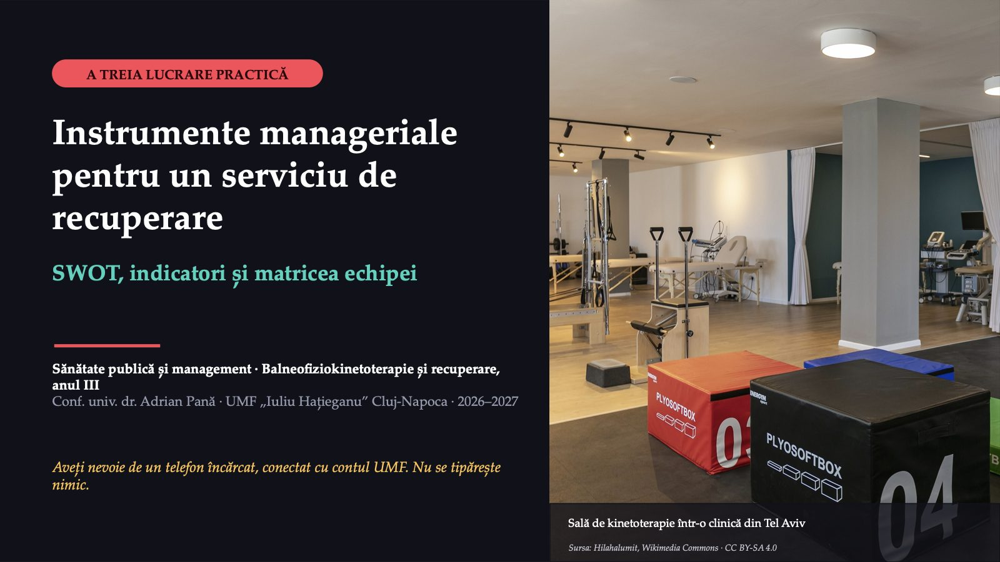
1 / 18Ce faceți, până când, unde
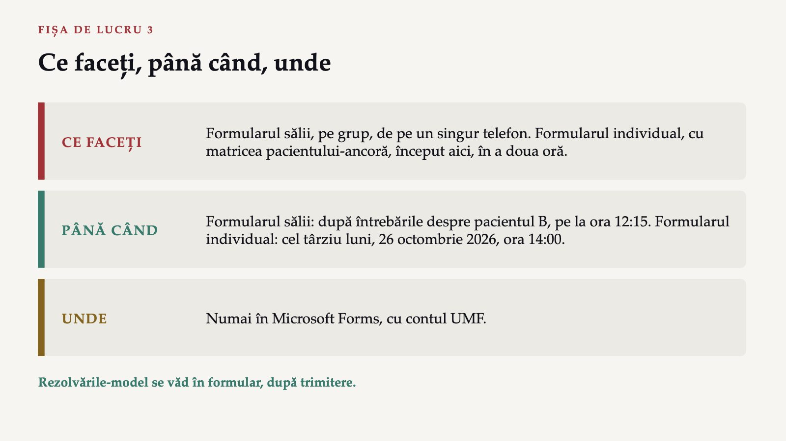
2 / 18Un grup de bancă, un telefon
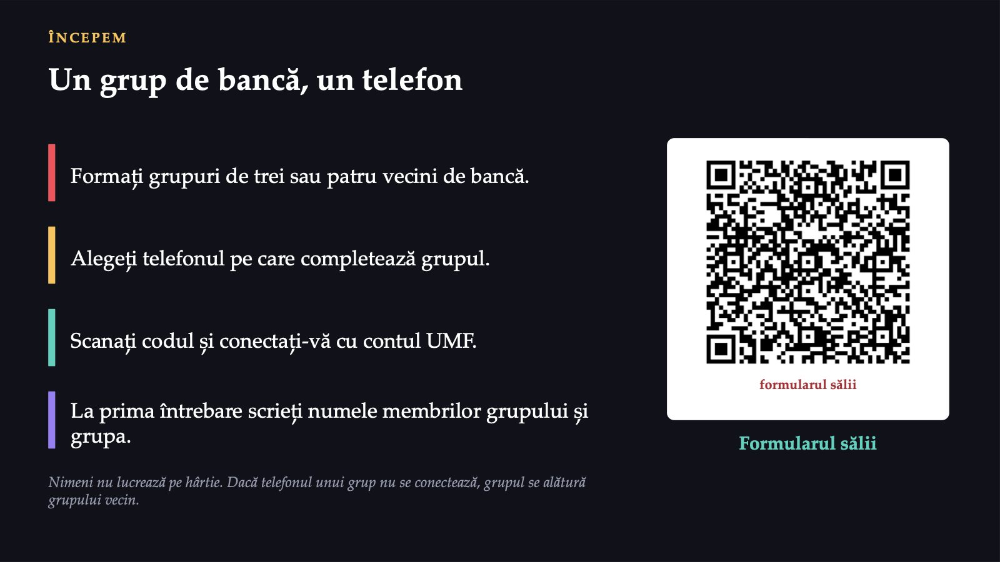
3 / 18Secția de recuperare a unui spital orășenesc
![Sală de fizioterapie, Karelia, Rusia Sursa: Igor Georgievskiy, Wikimedia Commons · CC BY-SA 4.0 PARTEA I · CAZUL SECȚIEI Secția de recuperare a unui spital orășenesc Douăzeci de paturi; pacienți după accident vascular cerebral și fractură de șold. Un fizioterapeut pleacă la o clinică privată. Transferul se așteaptă două săptămâni. Ședințele se programează pe o foaie de pe ușă; cele neținute nu se numără. Caz construit în scop didactic. Directorul cere un plan pentru anul următor. Unde se află secția acum?](diapozitive/LP03/004.jpg) 4 / 18
4 / 18Patru pași, unul după altul
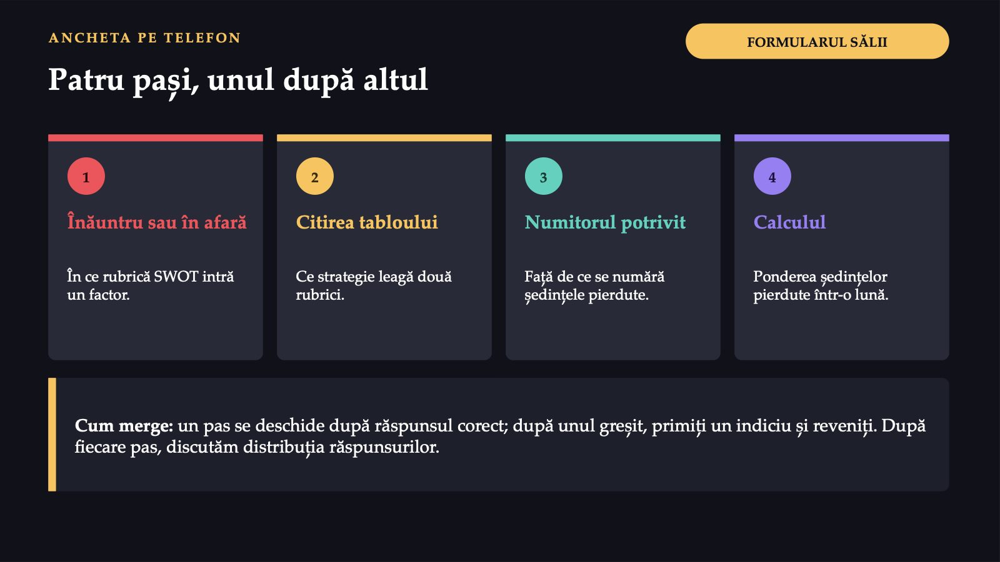
5 / 18Înăuntrul secției sau în afara ei
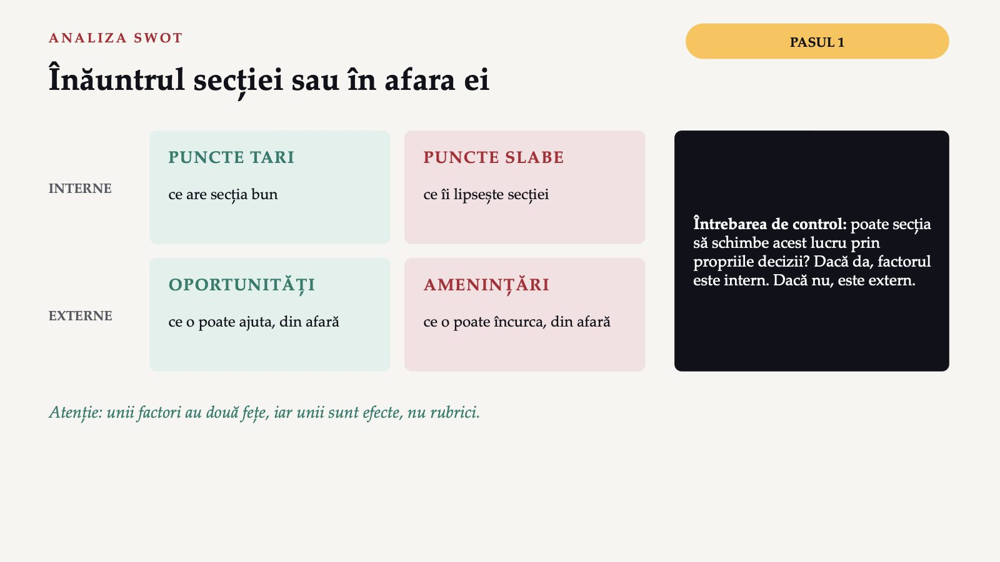
6 / 18Un tablou SWOT nu este încă un plan
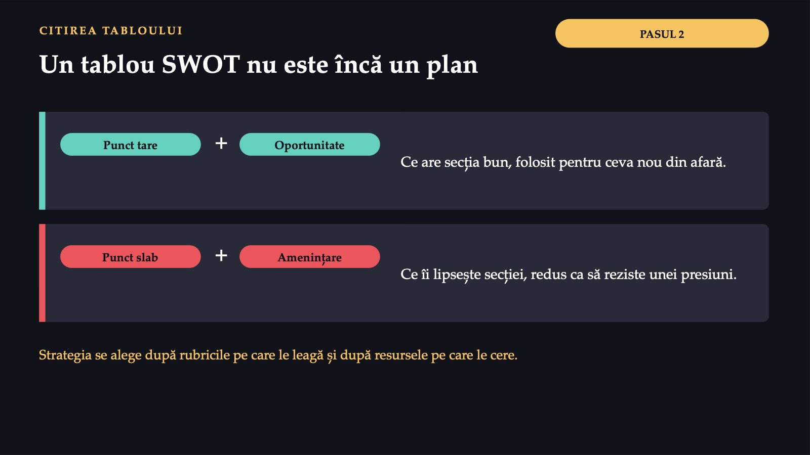
7 / 18?
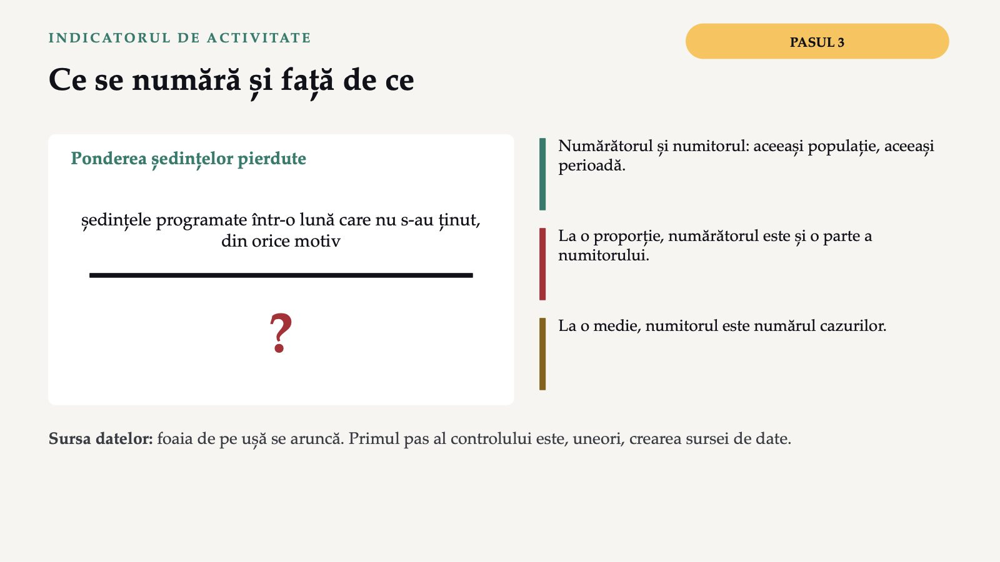
8 / 18Cifra spune cât se pierde, nu de ce
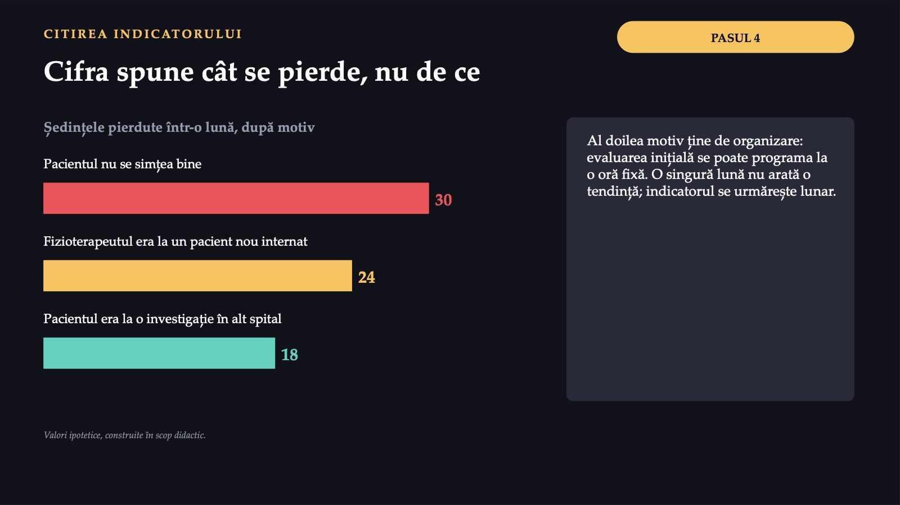
9 / 18Răspunsul apare după ședință
Răspunsul apare după ședință
Tabloul vostru și trei indicatori
 11 / 18
11 / 18Cinci profesioniști, nicio discuție despre externare
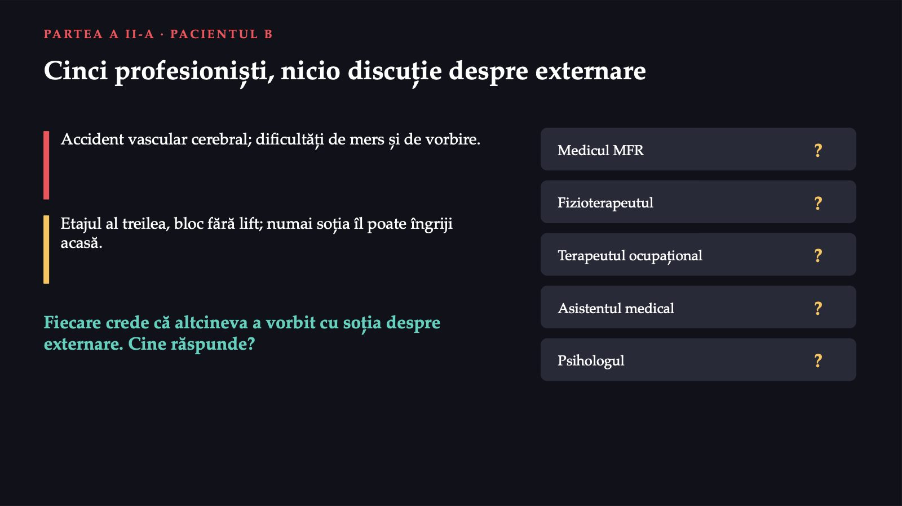
12 / 18Cine face, cine răspunde
![FORMULARUL SĂLII · VOT MATRICEA DE RESPONSABILITĂȚI Cine face, cine răspunde F face · R răspunde · C consultat înainte · I informat după. Pe fiecare rând, exact o literă R. Activitatea · Medicul MFR · Fizioterapeutul · Terapeutul ocupațional · Asistentul medical · Psihologul · Pacientul și familia Diagnosticul și prescripția recuperării Examinarea somatofuncțională Obiectivele recuperării Planul fizioterapeutic Ședințele de tratament Prevenirea căderilor în secție Exercițiile de acasă Reevaluarea planului fizioterapeutic Pregătirea externării În formular: cine răspunde de planul pacientului B; ce înseamnă trei litere R pe un rând.](diapozitive/LP03/013.jpg) 13 / 18
13 / 18Patru rânduri se citesc din lege
![CE FIXEAZĂ LEGEA Patru rânduri se citesc din lege Diagnosticul și prescripția medicul specialist (aici, medicul MFR) art. 4, art. 13 Examinarea somatofuncțională fizioterapeutul, pe prescripția medicului art. 13 lit. a) Planul fizioterapeutic fizioterapeutul, pe prescripția medicului art. 13 lit. b) Reevaluarea planului fizioterapeutic fizioterapeutul, care evaluează planul art. 17 lit. b) Legea nu prevede cine răspunde de obiectivele recuperării, de reevaluarea medicală sau de pregătirea externării: acolo decide echipa. Legea nr. 229/2016, art. 4, 13 și 17.](diapozitive/LP03/014.jpg) 14 / 18
14 / 18Răspunsul apare după ședință
Răspunsul apare după ședință
Formularul individual: matricea pacientului-ancoră
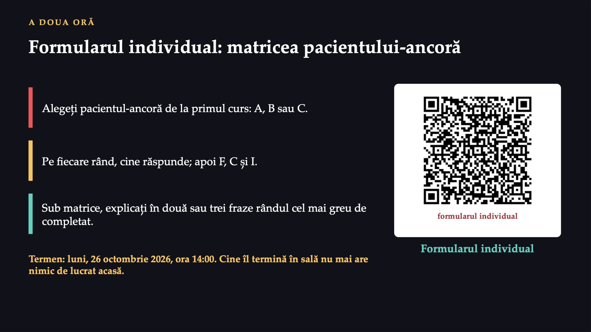
16 / 18Aceeași secție, de la două distanțe
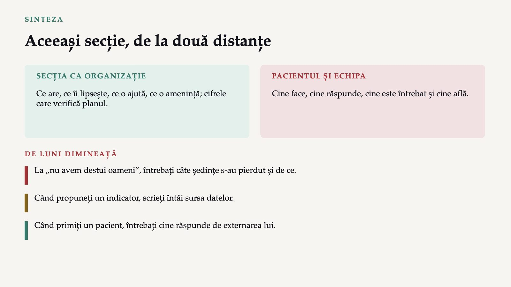
17 / 18Trei întrebări pentru titular
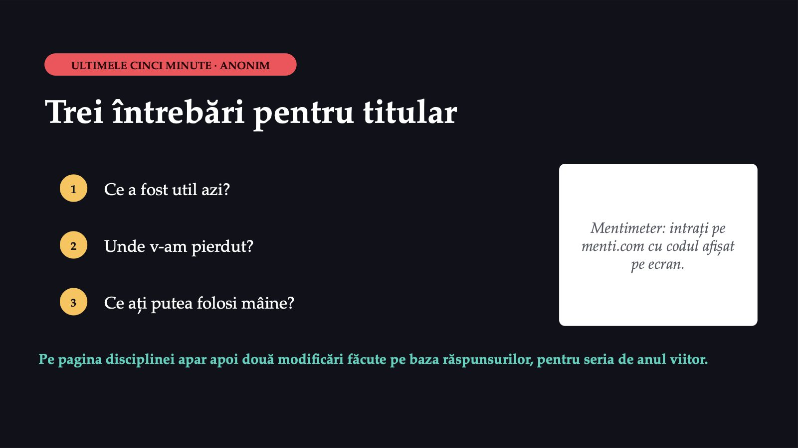
18 / 18Săgeți sau spațiu: navigare · O: vedere de ansamblu · N: notele prezentatorului · F: ecran complet · Esc: închidere